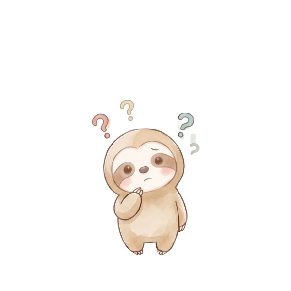
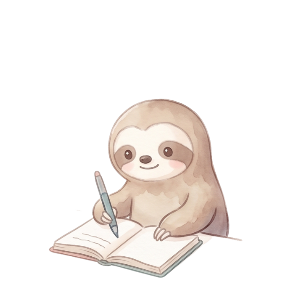

GEMINI NEW MOON JOURNALING
そのひとことで流れが変わる
🌙 双子座新月 ジャーナリングワークシート
今の自分がよく使っている言葉に気づき、
やわらかく整えていくためのワークです。
やわらかく整えていくためのワークです。
✍️ そのまま書き込めます。内容は自動でこの端末に保存されます（LocalStorage）

1 最近よく使っている言葉
人に対して ／ 自分に対して ／ 口ぐせ など、思いつく言葉を書いてみましょう。

2 その言葉の奥にある気持ち
その言葉を使うとき、本当はどんな気持ちや願いがあるでしょう？

3 やわらかく言い換えるなら？
否定ではなく、願いや気持ちが伝わる言葉に整えてみましょう。
いつもの言葉
言い換えた言葉
→
→
→
→

4 これから自分にかけたい言葉
今の自分に贈りたい、やさしいひとことを書いてみましょう。
ことばを整えることは、自分を責めることではなく、
自分にも相手にも、やさしい選択肢を増やすこと。
ゆっくりいきましょう 🌙